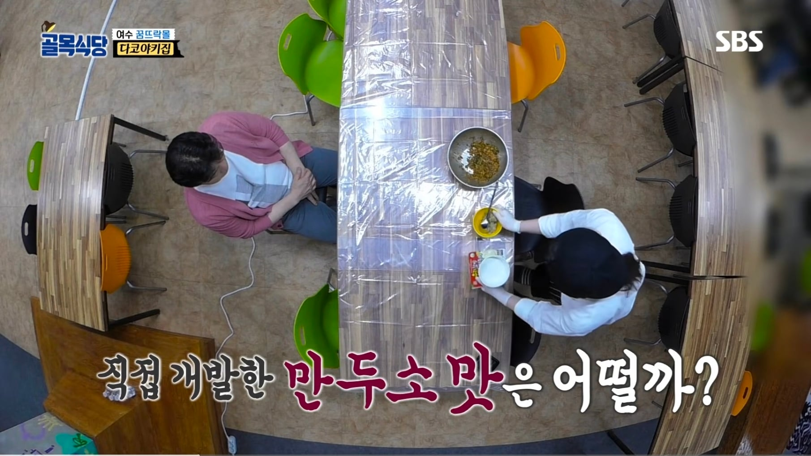
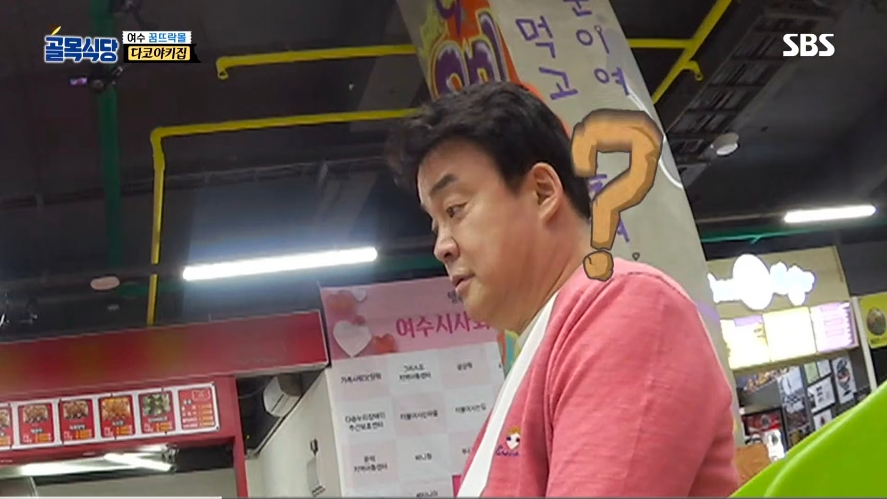
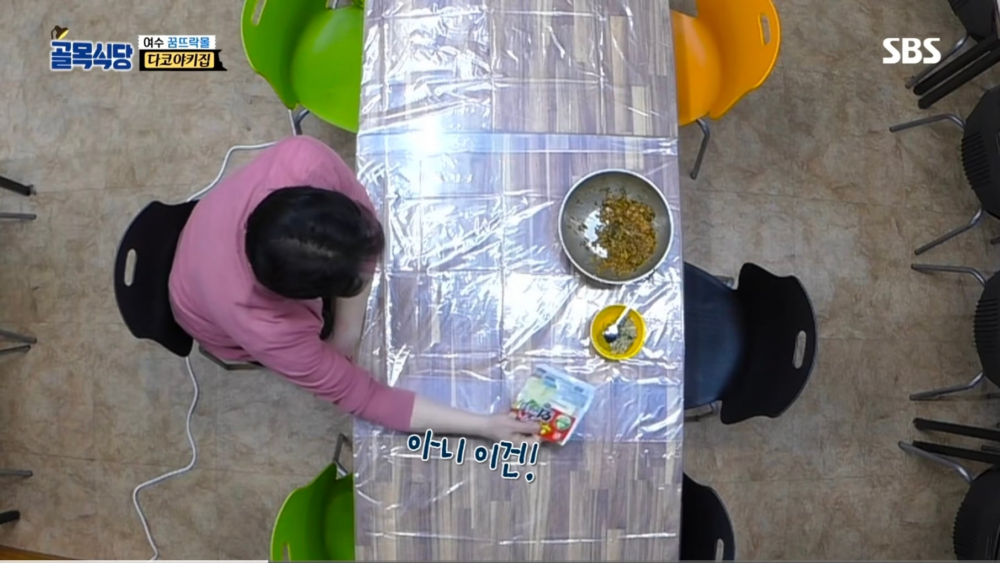
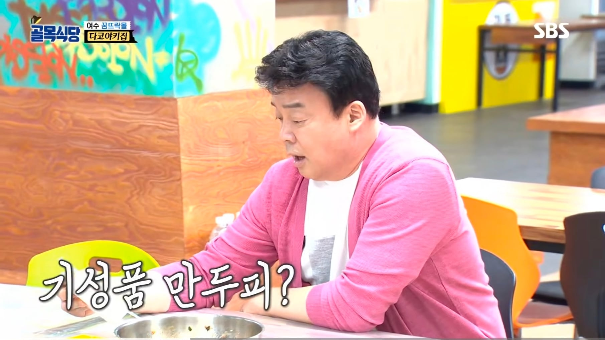
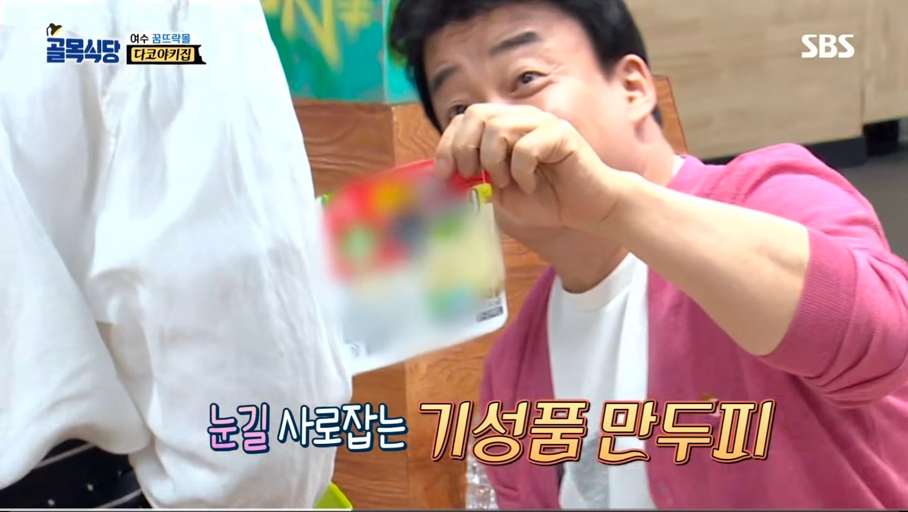
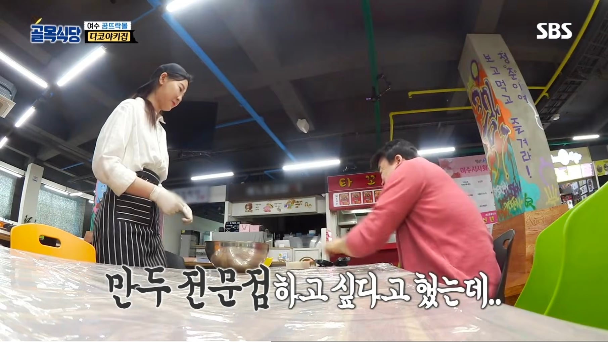
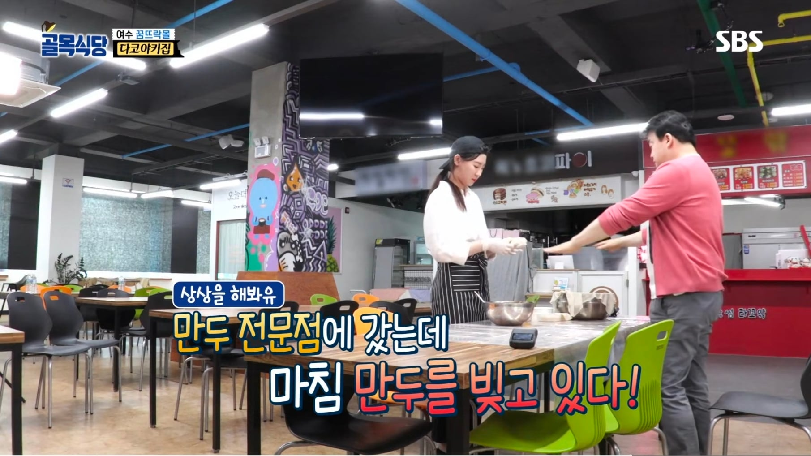
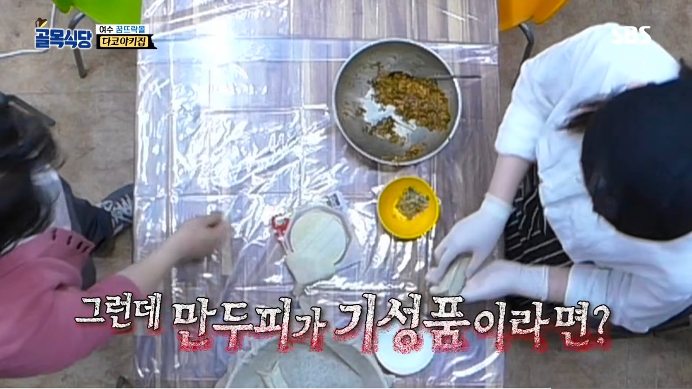
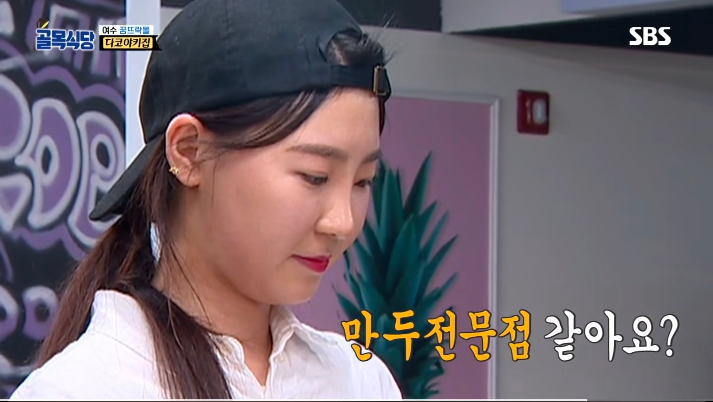
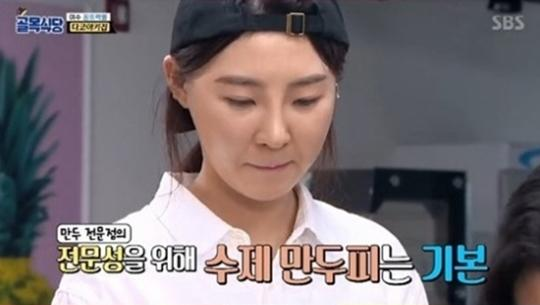
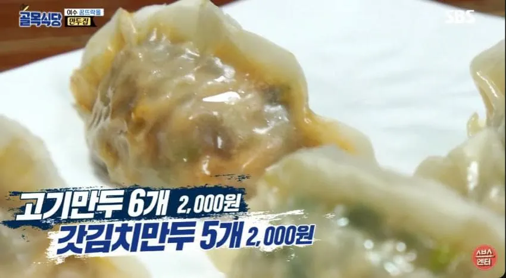
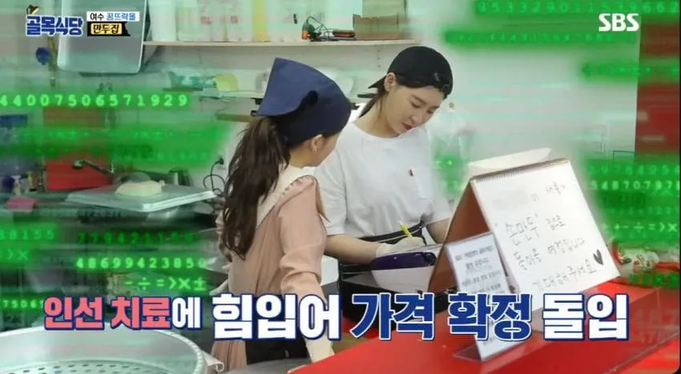
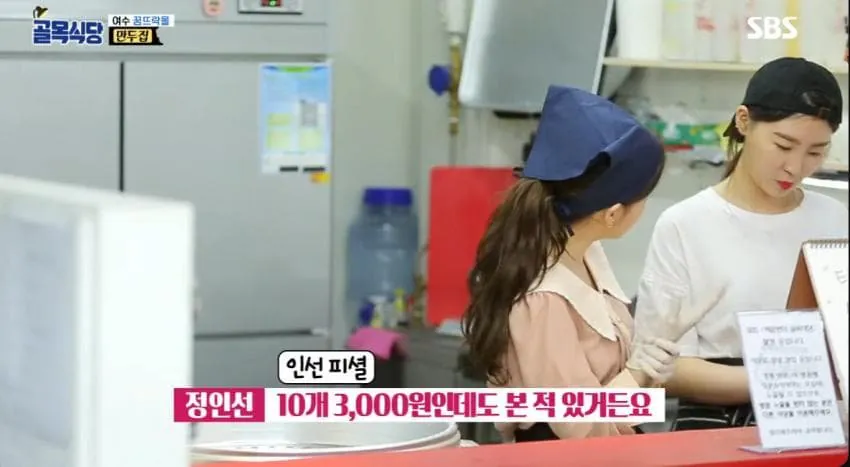
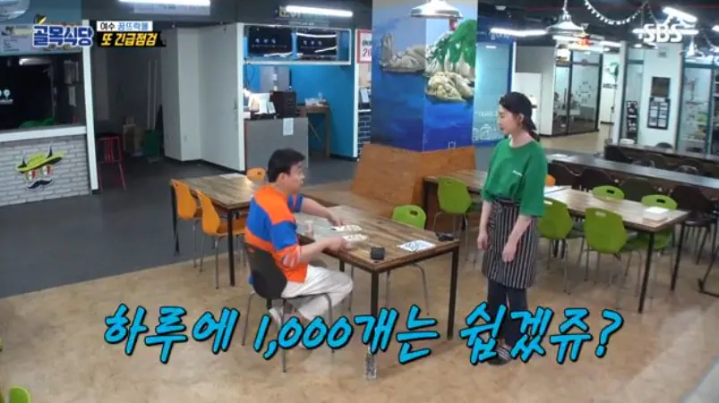
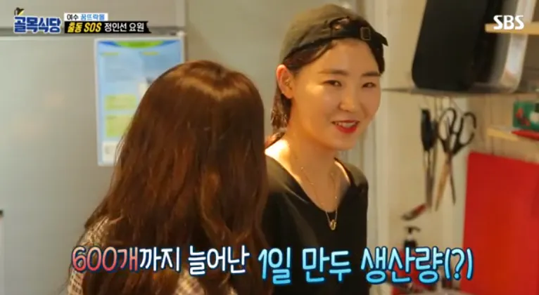
하루 1000개는 쉽겠쥬?
수제만두를 고기만두 6개에 2천원 갓김치만두 5개 2천원이라는 정신나간 가격으로 설정
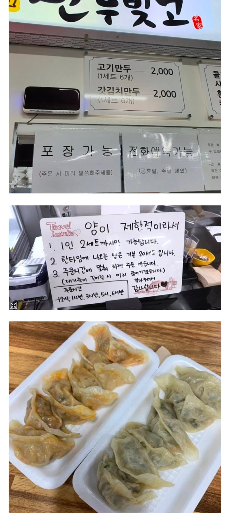
실제로는 갓김치만두도 6개 2천원 ㄷㄷ
만두는 하루에 20세트씩 5번 나오는데
저렇게 완판시켜봐야 하루 매출 20만원
월화수목금금금 한달 30일
만두 만드는 기계처럼 일해도 월매출이 600
순수익이 아니라 매출...
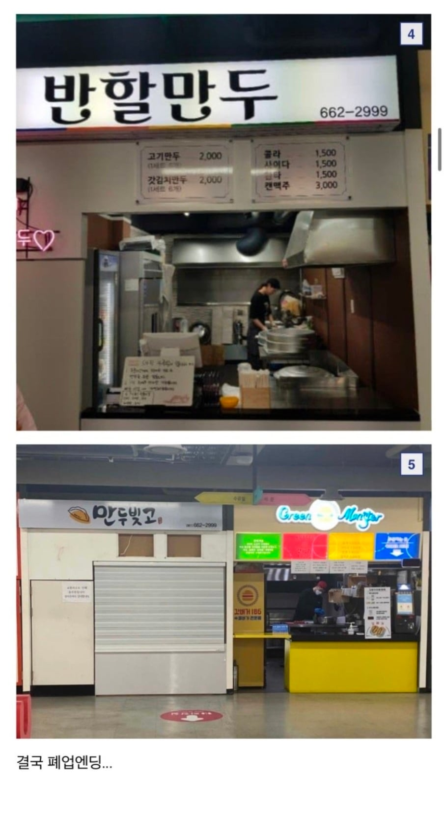
결국 폐업엔딩
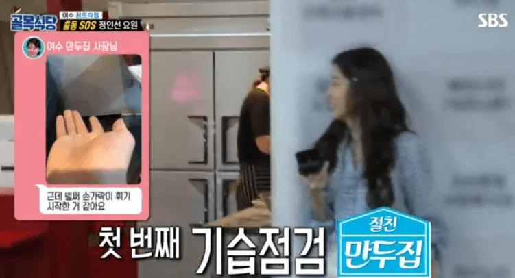
저 방송때도 만두 하도 손으로 만들어서 손가락 변형 오기 시작함
저때 이런글 올렸다?? 글쓴이가 매장당하던 시기였는데
우리나라같은 국민독재국가에서 누군가가 신격화되는건 진짜 주의해야함